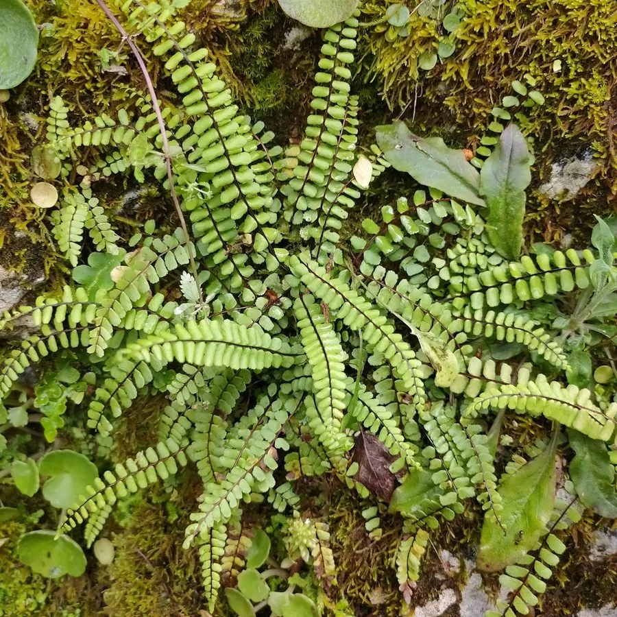

蕨类与裸子植物 · 植物界
铁角蕨 Asplenium trichomanes

铁角蕨的叶轴乌黑如铁线，羽片小而整齐对生，常附生于石缝和墙基上，是分布极广的小型附生蕨类植物。
- 分类
- 门蕨类植物门纲水龙骨纲目水龙骨目科铁角蕨科属铁角蕨属
- 栖息环境
- 岩石缝、墙基、石阶与树干，喜阴湿但耐干旱
- 地理分布
- 世界性广泛分布，中国各地常见
- 保护级别
- 暂无评估；野生种群稳定
物种志
铁角蕨是铁角蕨科小型蕨类，株高 10–30 cm。根状茎短而横走，密生鳞片。叶簇生，叶柄和叶轴栗褐色至黑色、有光泽，坚韧如铁线；叶片为一回羽状复叶，羽片小，长圆形或倒卵形，边缘有浅齿，排列整齐，深绿色。孢子囊群线形，着生于侧脉上，成熟时褐色。
铁角蕨喜阴湿、耐干旱，常附生于岩石缝、墙基、石阶与树干上，在世界各地广泛分布，是分布最广的蕨类之一。它能耐受较干燥的环境，干旱时叶片卷曲，遇水后恢复。铁角蕨以孢子繁殖，植株小巧、叶轴乌黑，适合岩石园、假山与盆景点缀。全草在民间作药用，有清热利湿、止血之效。铁角蕨的不同地理种群形态有差异，分类上仍有讨论。
形态与习性
- 株高10–30 cm
- 叶轴栗褐色至黑色，坚韧如铁线
- 叶一回羽状复叶，羽片小而整齐
- 孢子囊群线形，着生于侧脉上
- 生境石缝、墙基与树干
趣味知识
- 铁角蕨的叶轴乌黑发亮，像一根铁线，名字由此而来。
- 它常长在石缝和墙基里，是分布最广的蕨类之一。
- 铁角蕨干旱时叶片会卷曲，遇水后重新舒展。